Aula 27 – Limites da Computação:
Computabilidade e Complexidade Computacional
Universidade Federal do Rio Grande do Sul
Instituto de Informática
Departamento de Informática Teórica
Slides parcialmente baseados no material da Profa. Leila Ribeiro.
Definição. Um problema é definido por uma entrada, que descreve os recursos e informações que podem ser usados na solução do problema, uma saída, que descreve a solução esperada do problema, e uma descrição precisa e objetiva do problema em si, que usualmente é formulada em forma interrogativa (pergunta).
Nome do Problema
Enunciado/pergunta do problema, evidenciando a relação entre a saída e a entrada.
Entrada: Recursos/informações para solucionar o problema.
Saída: Descrição da solução esperada.
Quais problemas conseguimos resolver com modelos computacionais?
sqr = {(n,r) | r = n × n}
g = {(n,r) | r = n + 5}
Mas qual seria a lei de formação desta função:
l = {(0,51), (1,⊠), (2,😀), (3,➡), (4,✶), (5,2), (6,♤), (7,L), …}
Mesmo entre as funções \mathbb{N} \to \mathbb{N}, no universo de todas as funções possíveis de se construir, existem funções que não têm lei de formação.
Funções com lei de formação são funções computáveis!
Alan Turing
(1936)
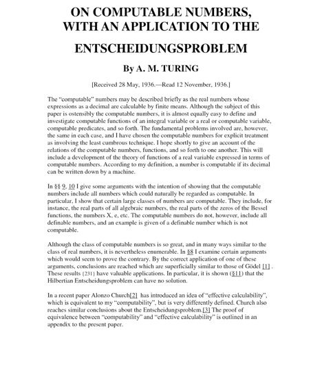
Quais problemas conseguimos resolver com modelos computacionais?
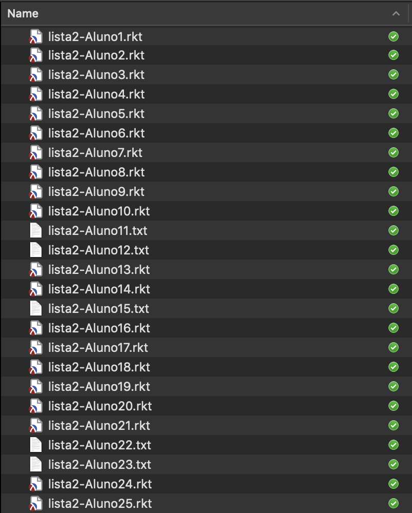
P1: Contratos e testes?
Obj: Dado um programa P construído por um aluno, o professor quer saber se o aluno incluiu contratos e testes para todas as funções.
Entrada: Programa.
Saída: Booleano.
P2: Passa nos testes?
Obj: Dado um programa P construído por um aluno e um conjunto de testes, o professor quer saber se o programa passa em todos os testes.
Entrada: Programa e testes.
Saída: Booleano.
P3: Incluir testes
Obj: Dado um programa P construído por um aluno e um conjunto de testes, o professor quer obter um outro programa incluindo todos os testes do professor e uma função que diz se todas as funções solicitadas pelo professor foram definidas pelo aluno.
Entrada: Programa, testes e nomes de funções.
Saída: Programa.
P4: Está correto?
Obj: Dado um programa P construído por um aluno e um programa construído pelo professor (a solução), o professor quer saber se o programa do aluno está correto, ou seja, para todas as entradas dá o mesmo resultado que o programa do professor.
Entrada: 2 programas.
Saída: Booleano.
P1: Contratos e testes?
P2: Passa nos testes?
P3: Incluir testes
P4: Está correto?
Tipicamente, para provar que um problema P não tem solução computacional se usa 2 estratégias:
pára?
Obj: Dado um programa P e uma entrada E para P dizer se P pára (termina) ou não quando executado sobre a entrada E.
Entrada: Programa e entrada.
Saída: Pára ou não pára.
Vamos assumir que existe um programa chamado pára? que resolve este problema, ou seja, assumimos que o problema tem solução computacional.
Lembre que podemos codificar todos os programas como números (bem como todas as entradas), então este programa poderia receber apenas números como argumentos …
Vamos analisar o comportamento de H:
Se H pára para entrada H, então H entra em loop (não pára); Portanto, H sobre entrada H não pára: CONTRADIÇÃO.
Se H não pára, H devolve 1 (pára). Logo, H sobre entrada H pára: CONTRADIÇÃO.
Portanto, se o programa pára? existir, chegamos a um paradoxo!
Logo, concluímos que
pára? é não-solucionável!
pára?
Obj: Dado um programa P e uma entrada E para P dizer se P pára (termina) ou não quando executado sobre a entrada E.
Entrada: Programa e entrada.
Saída: Pára ou não pára.
Este problema não tem solução computacional!
P2: Passa nos testes?
Obj: Dado um programa P construído por um aluno e um conjunto de testes, o professor quer saber se o programa passa em todos os testes.
Entrada: Programa e testes.
Saída: Booleano.
P2: Passa nos testes?
Obj: Dado um programa P construído por um aluno e um conjunto de testes, o professor quer saber se o programa passa em todos os testes.
Entrada: Programa e testes.
Saída: Booleano.
P1: Contratos e testes?
Obj: Dado um programa P construído por um aluno, o professor quer saber se o aluno incluiu contratos e testes para todas as funções.
Entrada: Programa.
Saída: Booleano.
P3: Incluir testes
Obj: Dado um programa P construído por um aluno e um conjunto de testes, o professor quer obter um outro programa incluindo todos os testes do professor e uma função que diz se todas as funções solicitadas pelo professor foram definidas pelo aluno.
Entrada: Programa, testes e nomes de funções.
Saída: Programa.
P4: Está correto?
Obj: Dado um programa P construído por um aluno e um programa construído pelo professor (a solução), o professor quer saber se o programa do aluno está correto, ou seja, para todas as entradas dá o mesmo resultado que o programa do professor.
Entrada: 2 programas.
Saída: Booleano.
Quais problemas conseguimos resolver
de maneira eficiente?
Podemos analisar eficiência sob diferentes aspectos:
Normalmente, se avalia eficiência de forma abstrata para a análise ser independente de uma máquina concreta.
Dado um tamanho de entrada, quanto tempo (espaço, energia, etc) é necessário para o algoritmo gerar a solução?
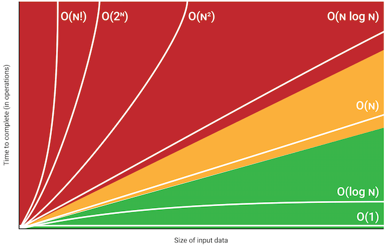
| Expressão | Requer 2 avaliações de |
|---|---|
maior([list: 0, 1, 2, 3]) |
maior([list: 1, 2, 3]) |
maior([list: 1, 2, 3]) |
maior([list: 2, 3]) |
maior([list: 2, 3]) |
maior([list: 3]) |
Complexidade:
fun ordena(l :: List<Number>) -> List<Number>:
doc: "Dada uma lista de números, retorna a lista ordenada em ordem crescente."
cases (List<Number>) l:
| empty => empty
| link(f, r) => insere(f, ordena(r))
end
end
fun insere(n :: Number, l :: List<Number>) -> List<Number>:
doc: "Dado um número e uma lista ordenada em ordem crescente, insere o número na lista mantendo-a ordenada."
cases (List<Number>) l:
| empty => link(n, empty)
| link(f, r) => ask:
| n < f then:
link(n, l)
| otherwise:
link(f, insere(n, r))
end
end
endSendo N o tamanho da lista de entrada, temos, em média:
ordenainsere> ordena([list: 2, 1, 3])
insere(2, ordena([list: 1, 3]))
insere(2, insere(1, ordena([list: 3])))
insere(2, insere(1, insere(3, ordena([list:]))))
insere(2, insere(1, insere(3, empty)))
insere(2, insere(1, [list: 3]))
insere(2, link(1, [list: 3]))
insere(2, [list: 1, 3])
link(1, insere(2, [list: 3]))
link(1, [list: 2, 3])
[list: 1, 2, 3]Pode-se definir o custo de resolver problemas e usar esses custos para classificar os problemas em classes de complexidade.
Existem muitas classes de complexidade, mas as mais importantes são as classes de problemas tratáveis (que podem ter solução computacional eficiente).
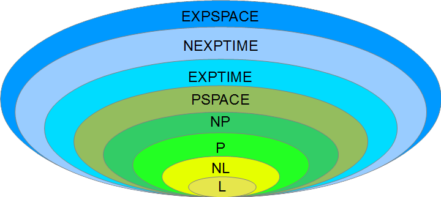
P = NP? [Cook 1971, Edmonds, Levin, Yablonski, Gödel]
O problema de decisão é tão fácil quanto o problema de verificação?
Se sim… Algoritmos eficientes para Caixeiro Viajante, Cobertura de vértices, …
Se não… Sem algoritmos eficientes para Caixeiro Viajante, Cobertura de vértices, …
Consenso. Provavelmente não.
Prêmio Millennium. 1 milhão de dólares para quem resolver o problema de P vs. NP.
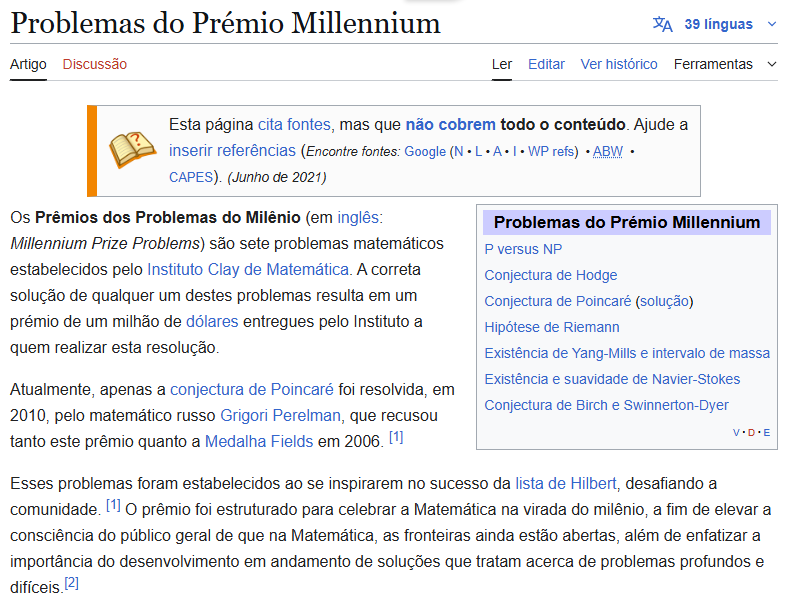
Qualquer instância do problema A pode ser transformada (reduzida) em uma instância do problema B.
A solução do problema B soluciona também o problema A.
Problema A:
Dado um número,
adicionar 1 a esse número
Problema B:
Dados dois números,
somar os números
Se o algoritmo que faz a transformação (redução) for eficiente (polinomial),
dizemos que esta é uma redução polinomial.
Problema A:
Dado um número,
adicionar 1 a esse número
Problema B:
Dados dois números,
somar os números
Se o algoritmo que faz a transformação (redução) for eficiente (polinomial),
dizemos que esta é uma redução polinomial.
Todo problema da classe P também está em NP.
Existem problemas na classe NP que são “os mais difíceis de resolver eficientemente”, no sentido que qualquer outro problema de NP pode ser reduzido a eles.
Estes problemas formam a classe de problemas NP-completos.
P = NP?
➞ Planejar um roteiro de viagem visitando algumas cidades de interesse de forma a minimizar o trajeto percorrido
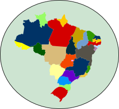
➞ Determinar quantas cores são necessárias para colorir um mapa tal que países que fazem fronteira não tenham a mesma cor.
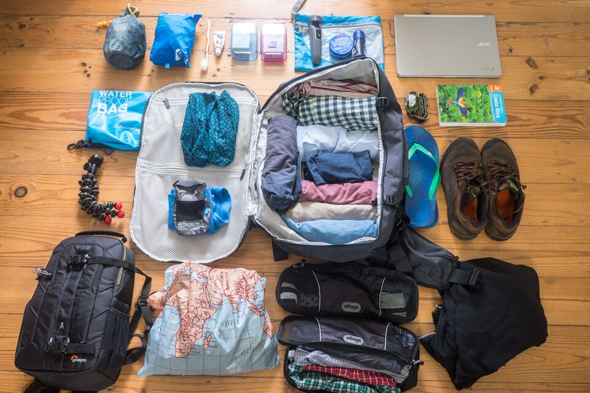
➞ Montar uma mala com no máximo 23kg, tendo um conjunto de itens para carregar, sendo que cada item possui um valor agregado e queremos que a mala tenha o maior valor possível
➞ Alocar convidados a mesas tal que amigos sentem juntos e inimigos separados
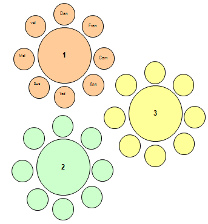
➞ Solucionar problemas Sudoku, Tetris, Minesweeper, Batalha naval, …
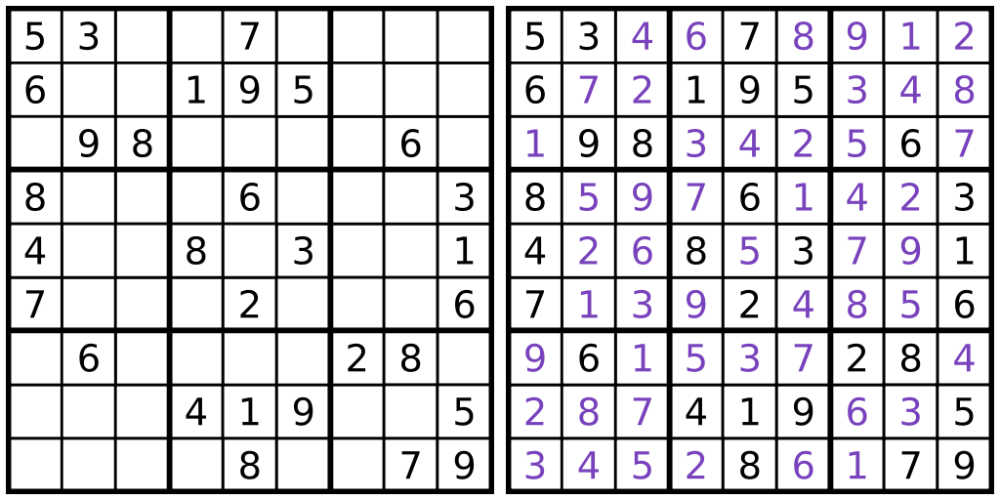
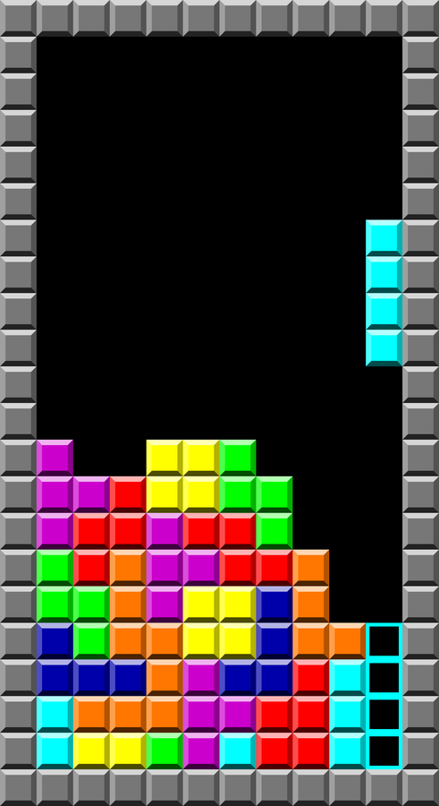
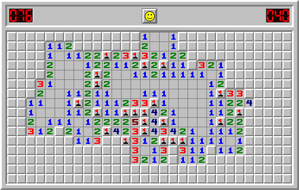
?